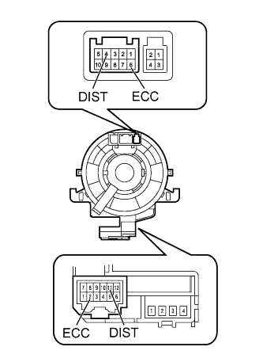

ДИНАМИЧЕСКАЯ РАДАРНАЯ СИСТЕМА КРУИЗ-КОНТРОЛЯ > Цепь выключателя системы контроля дистанции |
| 1.ПРОВЕРЬТЕ ВИТОЙ КАБЕЛЬ В СБОРЕ |
Снимите витой кабель в сборе (Нажмите здесь).
|  |
При обнаружении каких-либо из перечисленных ниже неполадок замените витой кабель новым: царапины, трещины, вмятины или сколы на разъеме или витом кабеле.
Проверьте витой кабель.
Установите витой кабель в центральное положение (Нажмите здесь).
Поверните витой кабель на 2,5 оборота по часовой стрелке и измерьте сопротивление в соответствии со значениями, приведенными в таблице. Затем поверните витой кабель на 5 оборотов против часовой стрелки и измерьте сопротивление в соответствии со значениями, приведенными в таблице.
| Контакты для подключения диагностического прибора | Условие | Заданные условия |
| 4 (DIST) - 11 (DIST) | Всегда | Менее 1 Ом |
| 6 (ECC) - 2 (ECC) |
Установите витой кабель в центральное положение и поверните его на 2,5 оборота по часовой стрелке. Затем, вращая витой кабель на 5 оборотов против часовой стрелки, измерьте сопротивление в соответствии со значениями, приведенными в таблице.
| Контакты для подключения диагностического прибора | Условие | Заданные условия |
| 4 (DIST) - 11 (DIST) | Всегда | Менее 1 Ом |
| 6 (ECC) - 2 (ECC) |
|
| ||||
| OK | |
| Перейдите к шагу 3 |
| 2.ПРОВЕРЬТЕ ПЕРЕКЛЮЧАТЕЛЬ НА РУЛЕВОМ КОЛЕСЕ (ВЫКЛЮЧАТЕЛЬ СИСТЕМЫ КОНТРОЛЯ ДИСТАНЦИИ) |
Снимите переключатель на рулевом колеса в сборе (Нажмите здесь)
Измерьте сопротивление в соответствии со значениями, приведенными в таблице ниже.
| Контакты для подключения диагностического прибора | Положение переключателя | Заданные условия |
| 4 (DIST) - 6 (ECC) | Выключатель системы контроля дистанции включен | Менее 2,5 Ом |
| Выключатель системы контроля дистанции выключен | 1 МОм или более |
| *1 | Выключатель системы контроля дистанции | - | - |
|
| ||||
| OK | |
| 3.ПРОВЕРЬТЕ ЖГУТ ПРОВОДОВ И РАЗЪЕМ (ВИТОЙ КАБЕЛЬ - ЭБУ ПОМОЩИ ПРИ ДВИЖЕНИИ И МАССА) |
Отсоедините разъем G40 витого кабеля.
Отсоедините разъем G119 ЭБУ.
Измерьте сопротивление в соответствии со значениями, приведенными в таблице ниже.
| Контакты для подключения диагностического прибора | Режим | Заданные условия |
| G40-11 (DIST) - G119-7 (MODE) | Всегда | Менее 1 Ом |
| G40-2 (ECC) - масса | ||
| G40-11 (DIST) - масса | Всегда | 10 кОм или более |
|
| ||||
| OK | ||
| ||